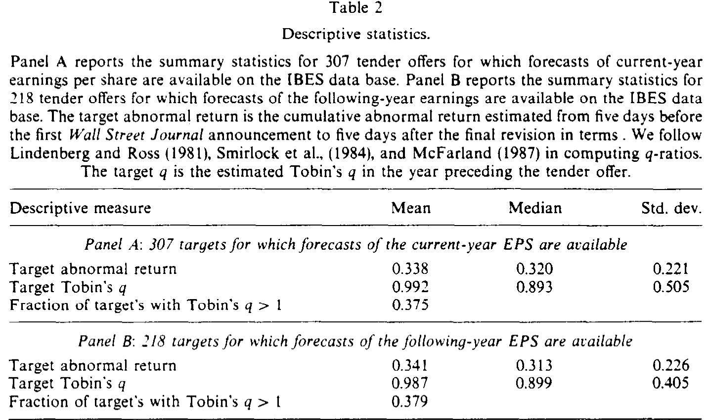
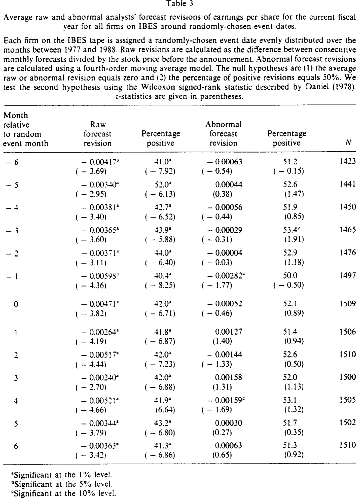
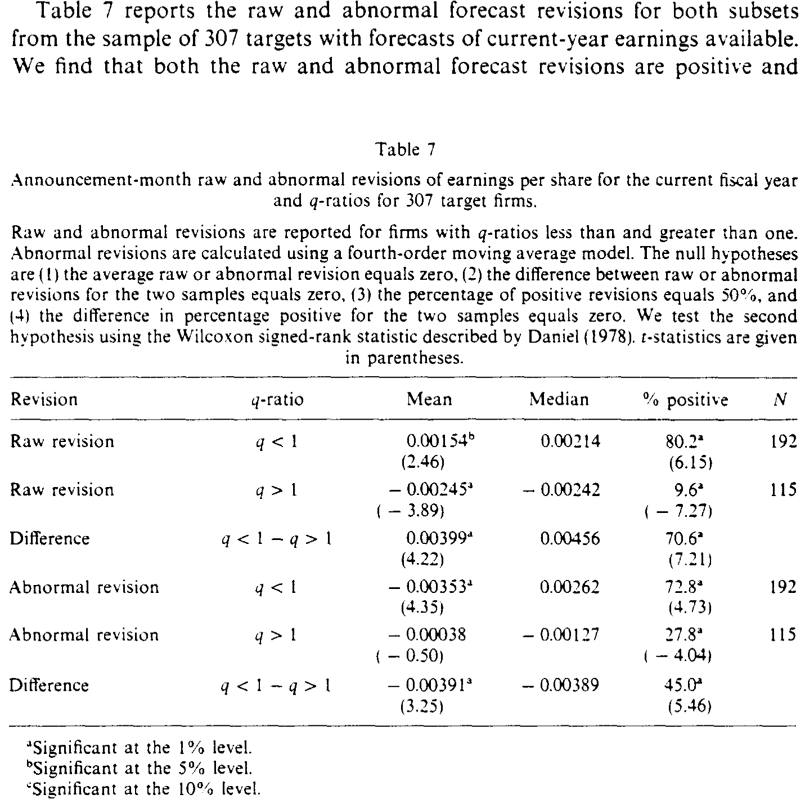
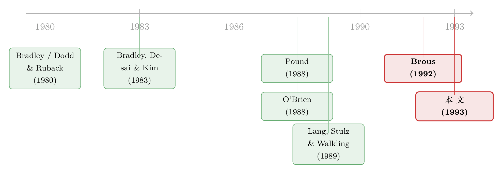

同一份数据，两个结论：当『分析师本来就会调低预测』这件事被忽略了
本文读的是 Brous & Kini (1993, Journal of Financial Economics)：他们重做了 Pound (1988) 关于收购目标公司分析师盈利预测的研究，指出 Pound 用了一把有偏的尺子——默认「预期预测修正为零」。一旦把分析师系统性的乐观偏差和序列相关校正进来，公告月的预测就是显著上调的，且低 Tobin's q 公司的上调幅度更大，支持信息假说；而管理层抵抗收购并不会摧毁目标公司的独立价值。结论与 Pound 全面相反。
1 一桩并购公告背后的「罗生门」
先从一个几乎人尽皆知的事实说起：一家公司被宣布收购，它的股票应声大涨。Brous 和 Kini 的样本里，目标公司在公告窗口的累计超额收益高达 33.8%（如表 2 所示）。这个数字本身没什么争议——争议在于，这 34% 到底是从哪里来的？
Bradley, Desai, and Kim (1983) 早就把这个问题摆上了台面。他们说，这种正向的市场反应，至少可以被两个互相竞争的故事解释。
第一个是 协同假说 (synergy hypothesis)：价值来自「合并」本身——收购方和目标公司凑在一起，能产生 1+1>2 的协同效应，所以股东分享的是未来合并后才会实现的收益。
第二个是 信息假说 (information hypothesis)：股价上涨，是因为公告泄露了关于目标公司自身的好消息。要么是给了平庸的管理层「当头一棒」（a kick in the pants），逼他们去采用一套更高价值的经营策略；要么是直接发出信号，告诉市场——这家公司本来就被低估了。

Table 2
这两个故事，从股价上完全看不出区别。涨 34%，既可以是「协同的预期」，也可以是「信息的释放」。那怎么办？
接着，一个自然的问题是：有没有一个变量，只对其中一个故事敏感？
有。那就是分析师对目标公司独立 (stand-alone) 盈利的预测。关键在「独立」二字：分析师预测的，是这家公司假如不被收购、继续自己单干能赚多少。Pound (1988) 论证过——无论是分析师的研报，还是他自己对分析师做的问卷,都支持一个前提：收购公告之后，分析师的预测反映的依然是目标公司作为独立实体的前景，因为投资者需要据此判断收购报价公不公平、该不该接受要约。
这个「独立」的设定，恰恰把两个假说劈开了：
- 如果是协同，协同收益要等合并后才兑现，根本不影响公司独立的价值——所以分析师不该上调独立盈利预测。
- 如果是信息，说明分析师此前低估了这家公司——所以应该出现向上修正。
于是问题被漂亮地归约成了一句话：收购公告之后，分析师上不上调对目标公司独立盈利的预测？
2 Pound 的答案，和它埋下的隐患
Pound (1988) 给出的答案是：没有显著上调。他发现，公告月对目标公司「收购后一年」盈利预测的修正，平均下来与零无显著差异。顺理成章地，他得出结论：那 34% 的股价反应，反映的是潜在的协同收益，而不是关于目标独立前景的好消息。
不仅如此，Pound 还顺手回答了另一个问题——管理层抵抗。他考察了那些抵抗收购的目标公司，发现从公告月之后、到收购最终落定为止（即所谓「抵抗期」），累计预测修正显著为负，而且无论收购最后成没成都是如此。这暗示：抵抗，损害了目标公司的独立价值。
到这里，故事似乎讲完了：协同是主角，抵抗是坏事。
但真正关键的一步，藏在一个几乎没人留意的技术假设里。
Pound（以及在他之前用 IBES 数据做事件研究的几乎所有人）都默认了一件事：预期的预测修正等于零。换句话说，他们假设观测到的预测修正本身，就是「未预期」的、「异常」的那部分——
$$E[FR_{i,t}] = 0 \quad\Rightarrow\quad \text{abnormal revision} = FR_{i,t}$$
这个假设听上去无害，却恰恰是整篇论文要拆掉的那块基石。
因为 O'Brien (1988) 和 Brous (1992) 已经发现：分析师并不是「无偏」的预言家。他们普遍高估未来盈利，然后随着财年推进，每个月都在系统性地往下调预测。 Brous & Kini 在自己 1977–1988 的样本上重新验证了这一点，结果触目惊心：
- 整个样本期，当年盈利预测的月均修正是
-0.00371（t 值-7.40），下一年盈利预测是-0.00236（t 值-3.88）——都显著为负； - 在考察的 12 个年份里，当年预测有
11年、下一年预测有10年在 5% 水平上显著为负； - 这种乐观偏差对小公司最严重，并随公司规模单调递减。
这意味着什么？意味着分析师预测的「正常状态」根本不是水平线，而是一条持续向下的斜坡。如果把这条向下的斜坡当成零基准，那么 Pound 的检验天生就偏向于「找不到正的异常上调」，同时偏向于「在抵抗期找到负的累计修正」——因为预测本来每个月就在往下掉。他测到的「负」，可能压根不是抵抗造成的，而是分析师乐观偏差的自然回落。
换句话说：Pound 不是数据错了，而是尺子错了。
3 把尺子重新校准：一个四阶移动平均的预期模型
于是，这篇论文的全部技术活，就落在一件事上——为「预期的预测修正」建一个像样的模型，而不是简单粗暴地令它为零。
先定义观测到的月度预测修正。对公司 \(i\) 在第 \(t\) 月：
$$FR_{i,t} = \frac{F_{i,t} - F_{i,t-1}}{P_i}$$
其中 \(F_{i,t}\) 是 IBES 报告的第 \(t\) 月分析师每股盈利预测均值，\(F_{i,t-1}\) 是上月的，\(P_i\) 是公告前一月末的股价（用价格标准化，这一处理的理论与实证依据见 Christie (1987)）。
模型要捕捉数据的两个「顽固特征」。
第一，乐观偏差因公司而异，且与财年/季度结束的月份无系统关系。 上一节已经说清了。
第二，预测修正存在正的序列相关。 Brous (1992) 指出，这是因为并非所有分析师每个月都更新预测。Brous & Kini 实测：每月更新预测的分析师比例，按公司规模十分组看，当年预测从最小组的 14.3% 到最大组的 20.1%，下一年预测从 18.7% 到 24.6%——大致就是每月约 20%。
每月只有 ~20% 的人更新，意味着一条信息平均要花四个月才能完全反映进分析师预测的均值里。所以任意一个月的修正，都会和前四个月的修正纠缠在一起。于是他们假设预测修正服从一个四阶移动平均 (fourth-order moving average) 过程，把公司 \(i\) 第 \(t\) 月的预期修正写成：
这里的逻辑值得一步步拆开：
- \(k_i\) 是「偏差成分」——它就是公司 \(i\) 在平时（避开收购窗口 $-6$ 到 $+6$ 月）平均每月会往下调多少。这把那条「向下的斜坡」的斜率给量出来了。
- \(\varepsilon_{i,t-s}\) 是「未预期成分」，定义为 \(k_i\) 与该月实际修正之差——也就是扣掉常态偏差后，那个月真正「冒出来的新东西」。
- 权重统一取 \(0.20\)，正对应「每月约两成分析师更新」这个事实：前四个月每个月冒出来的新信息，会以 0.20 的速度逐步渗进当月的均值。
最后，异常预测修正 (abnormal forecast revision) 就是观测值减去这个预期值：
$$\text{Abnormal } FR_{i,t} = FR_{i,t} - E[FR_{i,t}]$$
这个模型妙在「简约」——它有市场调整模型的简单，却同时抓住了乐观偏差和序列相关两个要害。作者也试过另外两种模型（一种是市场调整法，一种是逐公司估计的正式时间序列模型），结论大体一致。
那怎么知道这把新尺子没量歪？这是最容易被忽略、却最关键的一步：校验。他们给 IBES 上每家公司随机分配一个均匀分布在 1977–1988 的「假事件日」，再用同样的模型去算异常修正。如果模型是对的，那么围绕随机日子，原始修正应当显著为负（因为乐观偏差总在），而异常修正应当接近零（因为随机日子没有真实信息）。结果正如预期（如表 3 所示）：原始修正普遍显著为负，而异常修正在零附近、基本不显著。尺子，校准好了。

Table 3
4 反转：收购公告确实带来了好消息
校准好尺子，再回头量收购目标公司，结论就反过来了。
首先，与 Pound 相反，公告月的异常预测修正系统性地为正。无论是当年盈利还是下一年盈利，平均而言异常修正都是正的——这直接支持信息假说：分析师此前确实低估了这些公司，公告释放了好消息。
接着，一个更漂亮的横截面检验出现了。 如果真是「信息」在起作用，那么信息含量应该在最该被低估、最该挨那记『当头一棒』的公司身上最强。谁是这样的公司？低 Tobin's q 的公司——市值低于重置成本，要么是被市场低估，要么是被平庸管理层糟蹋了。Brous & Kini 的样本里，平均 q 只有 0.992，中位数 0.893，只有约 37.5% 的目标公司 q 大于 1——本来就是一批「便宜货」。
于是他们把样本按 q 高低切开对比。结果：低 q 公司的原始修正和异常修正，无论当年还是下一年盈利，平均都为正，且显著高于高 q 公司（如表 7 所示）。这正是信息假说最想看到的图景——越是「有提升空间」的公司，公告释放的好消息越多。这也说明，潜在的协同收益并不是那 34% 股价反应的唯一来源。

Table 7: reports the raw and abnormal forecast revisions for both subsets
注意作者非常诚实的一句话：他们的结果无法区分信息到底是关于「股价被低估」还是关于「平庸管理层将被监督」。信息假说赢了协同假说，但信息假说内部的两个版本——低估 vs 监督——这篇论文管不了。
然后是管理层抵抗。 对那些抵抗收购的子样本，Pound 测到的是抵抗期累计修正显著为负。而 Brous & Kini 用校准后的尺子重测，发现：无论收购最终成败，当年和下一年盈利的累计异常修正，在抵抗期都与零无显著差异。 抵抗对目标公司的独立价值是中性的——它既没创造价值，也没摧毁价值。
于是反转彻底完成。 同一类数据、同样的研究设计，仅仅因为把「预期修正为零」这个错误假设换成一个会向下倾斜、且有序列相关的预期模型，Pound 的两个核心结论——「协同主导信息」「抵抗摧毁价值」——就双双被推翻。这是一篇标准的「方法纠错型」论文：它没有发现新现象，而是证明了前人发现的现象，是尺子造出来的幻觉。
（关于管理层在收购中的动机，是「自肥」还是「为股东」，可参见《老板该不该抵抗收购？答案写在他自己的股票里》；关于「收购究竟有没有创造价值」的方法之争，可参见《do-tender-offers-create-value-new-methods-and-evidence》。）
5 文献脉络
把这条线捋一捋。
最早，Bradley (1980)、Dodd and Ruback (1980) 等人确立了一个基本事实：收购公告会给目标公司股东带来显著正收益。但「钱从哪来」始终悬而未决。Bradley, Desai, and Kim (1983) 第一次把它清晰地拆成信息假说与协同假说两条腿，并指出二者并不互斥；他们在 (1988) 又系统度量了协同收益及其在收购双方之间的分配。
真正把「分析师预测」当作探针、试图劈开两个假说的，是 Pound (1988)。他的思路极具开创性——可惜，他踩进了一个当时整个文献都默认的陷阱：把预期预测修正设为零。
与此同时，会计与盈利预测这条支线在悄悄积累弹药。O'Brien (1988) 和 Brous (1992) 揭示了分析师预测的两个系统性特征——乐观偏差与序列相关；Elton, Gruber, and Gultekin (1984)、Klein (1990) 等也提供了关于预测效率的旁证。这些「关于预测本身」的研究，恰好成了重做 Pound 的弹药库。

平行地，Lang, Stulz, and Walkling (1989) 把 Tobin's q 引入收购研究，论证业绩差、q 低的目标公司收购收益更大——这给了 Brous & Kini 那个漂亮的横截面检验一个直接的理论落点。
本文 (1993) 正处在「并购信息内容」与「分析师预测计量」两条线的交汇点上：它借后者的工具，去重审前者的一桩公案，最终把结论扳了回来。
6 评论与延伸（Q&A + 研究方向）
(a) 几个可能的疑问
Q：这篇论文真正的「新东西」是什么？不就是换了个统计模型吗？
对，但「换尺子」本身就是贡献。它的价值不在于发明了新现象，而在于证明了一个被广泛默认的假设（预期修正=0）足以系统性地颠倒结论。这类论文提醒整个领域：用 IBES 做事件研究时，分析师的乐观偏差和序列相关不是细节，而是会改变符号的一阶问题。
Q：为什么偏要用 Tobin's q 来切样本，而不是别的指标？
因为 q 直接对应信息假说的机制。低 q（市值低于重置成本）意味着公司要么被低估、要么被平庸管理层拖累——这正是「公告释放好消息」最该发生的地方。所以「低 q 公司上调更多」不是一个随便挑的相关性，而是信息假说的一个方向明确的预测，证伪力更强。
Q：那 0.20 的权重和「四阶」是不是拍脑袋定的？
不算拍脑袋。0.20 来自实测——每月约 20% 的分析师更新预测；「四阶」也由此而来——若每月两成更新，平均一条信息要四个月才完全渗入均值。当然这仍是近似，作者也承认逐公司的正式时间序列模型理论上更准，只是对数据点要求太高。他们另外两种模型给出一致结论，算是稳健性的一种交代。
Q：信息假说赢了，是不是就说明并购没有协同效应？
不能这么推。作者反复强调两个假说并不互斥：信息被释放，并不排除协同收益的存在。这篇论文只是证明「协同是 34% 股价反应的唯一来源」这个强结论站不住——独立价值确实被上调了，所以信息这条渠道确实在场。至于协同占多大比重，本文回答不了。
Q：管理层抵抗「中性」，是不是意味着抵抗对股东无所谓？
只能说在独立盈利预测这个维度上中性——抵抗没有让分析师调低对公司独立前景的预期。它没有回答「抵抗是否影响最终成交价、是否改变成交概率」这类问题。Pound 说抵抗毁价值，本文说至少在这个证据上看不到；这是对一个过强结论的纠偏，而不是给抵抗发了无罪证明。
Q：用公告前一月末的股价 \(P_i\) 做分母，会不会有问题？
用价格标准化是 Christie (1987) 论证过的常规做法，好处是让不同价位的公司可比。潜在隐患是：如果公告前股价已经因泄露而异动，分母本身就含噪声。但作者用的是公告前一月末的价格，离窗口有一段距离，受污染相对有限。
(b) 几个可能的研究问题与提案
1. 把「信息 vs 协同」的探针搬到公司债市场。
【经济故事】股价对收购的反应混合了信息与协同，难以分离。但目标公司的债券对「独立现金流改善」和「合并后信用变化」的反应路径不同——独立价值上调利好原债权人，而高杠杆收购可能恶化信用。若同时观察目标公司债券利差与股票反应，或可给两个假说提供一个新的、互补的识别维度。 【可行性】中。需要 TRACE 之后的公司债成交数据（限制样本到 2002 年后），并匹配收购事件与目标公司的存量债券。识别上要小心区分「信息」与「杠杆冲击」，可借收购融资结构做异质性。
2. 在机器可读的研报文本里，直接验证「独立预测」假设。
【经济故事】Pound 和本文都依赖一个前提：公告后分析师预测的仍是「独立」盈利。这个前提在 1988 年靠问卷支撑，今天可以用 NLP 直接检验——研报里到底是在讨论 stand-alone 还是 pro-forma（合并后）口径？ 【可行性】高。研报全文数据（如 Refinitiv/Thomson research）加上文本分类即可。识别清晰，唯一成本是数据获取与标注。
3. 重估外资持有对收购目标盈利预测的影响。
【经济故事】外资机构持股高的目标公司，公告后的预测修正会不会不同？一种可能是外资带来更挑剔的监督预期（信息渠道更强），另一种是外资分析师覆盖少、信息更新更慢（序列相关更严重）。这恰好把本文的「乐观偏差/序列相关」框架与外资持有人议题接上。 【可行性】中。需 IBES 预测、FactSet/13F 类持股数据与跨国收购样本。识别上外资持股内生，需用指数纳入或可投资度变动一类的外生冲击。
4. 把「乐观偏差校正」做成一个通用的事件研究稳健性诊断。
【经济故事】本文的教训——「默认预期修正为零」会翻转结论——其实适用于一大批用分析师预测做事件研究的文献（增发、回购、盈余公告等）。能否系统地回测：有多少经典结论在校正乐观偏差与序列相关后会变弱甚至反号？ 【可行性】高。纯计量与复制工作，IBES 历史数据充足。价值在于给整个事件研究范式提供一份「偏差敏感性」清单。
我的判断
这是一篇教科书式的「方法纠错」论文，贡献清晰且诚实：它没有夸大自己——明确承认无法区分「低估」与「监督」、明确承认信息与协同并不互斥。它最大的价值，是把一个被默认了十几年的零基准假设拎出来打脸，并用随机事件日做了干净的尺子校验。
对识别的担忧主要有三点。其一，预期模型里的 \(k_i\)、0.20、四阶都是基于全样本平均特征的近似，若乐观偏差在收购窗口前后本身发生了结构性变化（比如分析师预感到收购而提前调整），\(k_i\) 的估计会被污染。其二，样本筛选相当严苛——要求整个收购争夺在一个财年内完成、且能算出 q——这会偏向于「干净、快速解决」的收购，对慢节奏、长拉锯的敌意收购的代表性存疑（作者也提到放松限制后结论定性不变，但细节留待索取）。其三，所谓「独立预测」的前提，在今天看来值得用文本数据重新验证。
后续我最想看到的，是把这套「校正后的预测修正」拿到债券市场和外资持有人两个维度上去交叉验证——如果独立价值真的被上调了，原债权人应该也能在利差里读到同一句话。那将是对信息假说一个真正独立的旁证。
参考文献
- Bradley, Michael, 1980. Interfirm tender offers and the market for corporate control. Journal of Business 53, 345–376.
- Bradley, Michael, Anand Desai, and E. Han Kim, 1983. The rationale behind interfirm tender offers: Information or synergy? Journal of Financial Economics 11, 183–206.
- Bradley, Michael, Anand Desai, and E. Han Kim, 1988. Synergistic gains from corporate acquisitions and their division between the stockholders of target and acquiring firms. Journal of Financial Economics 21, 3–40.
- Brous, Peter, 1992. Common stock offerings and earnings expectations: A test of the release of unfavorable information. Journal of Finance 47, 1517–1536.
- Christie, Andrew, 1987. On cross-sectional analysis in accounting research. Journal of Accounting and Economics 9, 231–258.
- Dodd, Peter, and Richard Ruback, 1980. Tender offers and stockholder returns. Journal of Financial Economics 5, 105–138.
- Elton, Edwin J., Martin J. Gruber, and Mustafa N. Gultekin, 1984. Professional expectations: Accuracy and diagnosis of errors. Journal of Financial and Quantitative Analysis 19, 351–364.
- Klein, April, 1990. A direct test of the cognitive bias theory of share price reversals. Journal of Accounting and Economics 13, 155–166.
- Lang, Larry, Rene Stulz, and Ralph Walkling, 1989. Managerial performance, Tobin's q, and the gains from successful tender offers. Journal of Financial Economics 24, 137–154.
- Lindenberg, Eric B., and Stephen A. Ross, 1981. Tobin's q ratio and industrial organizations. Journal of Business 54, 1–32.
- O'Brien, Patricia, 1988. Analyst's forecasts as earnings expectations. Journal of Accounting and Economics 10, 187–221.
- Pound, John, 1988. The information effects of takeover bids and resistance. Journal of Financial Economics 22, 207–227.